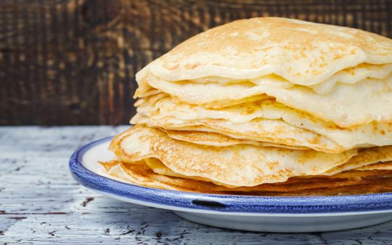

Massa de Panqueca

Ingredientes
- 2 xícaras (chá) de farinha de trigo
Modo de preparo
- Bata todos os ingredientes no liquidificador por 2 minutos.
- Em seguida desligue e, com uma colher, misture a farinha que grudou no copo do liquidificador.
- Bata novamente só para misturar e reserve.
- Unte a frigideira com um fio de óleo e leve ao fogo até aquecer.
- Com o auxílio de uma concha, pegue uma porção de massa e coloque na frigideira, gire a frigideira para espalhar bem a massa.
- Abaixe o fogo e deixe dourar por baixo, em seguida vire do outro lado e deixe dourar, repita o processo com toda a massa.